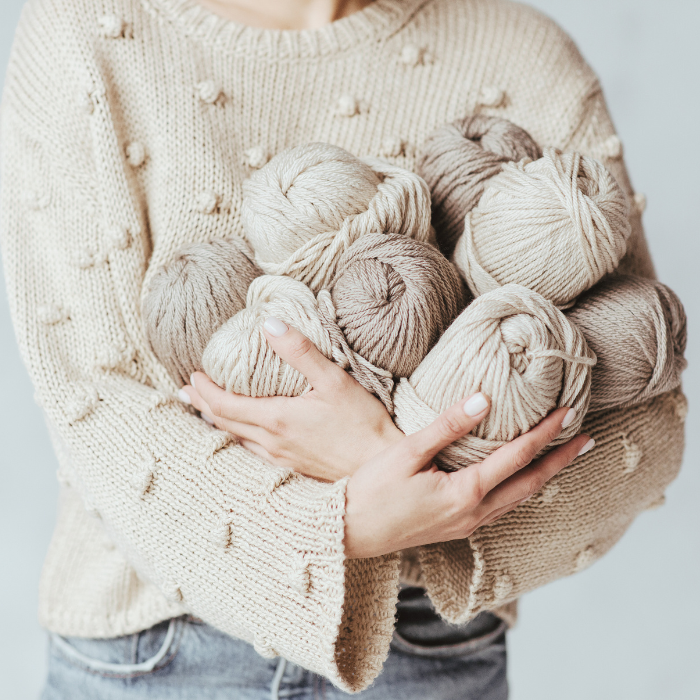

Farvevalg: Farverne kan gøre en stor forskel i dit hækleprojekt. Overvej, om du ønsker et ensfarvet eller flerfarvet garn. Hvilken farvepalet passer bedst til det, du vil opnå? Du kan også eksperimentere med farveovergange, ombré-effekter eller farveskiftende garn for at tilføje visuel interesse til dit projekt.
Garnets kvalitet: Kvaliteten af garnet er vigtig for at opnå et smukt og holdbart resultat. Vælg garn af god kvalitet, der er vævet eller spundet jævnt, uden ujævnheder eller knuder. Læs anmeldelser, eller få anbefalinger fra erfarne hæklere eller garnbutikker for at finde pålidelige mærker og producenter.
Budget: Overvej dit budget, når du vælger garn. Priserne kan variere meget afhængigt af mærke, kvalitet og fiberindhold. Der er gode garnmuligheder i alle prisklasser, så det handler om at finde det, der passer til din økonomi.
Prøvehækling: Hvis det er muligt, prøvehækl en lille prøvestrik med det valgte garn for at se, hvordan det ser ud og føles i din hækleteknik. Det kan hjælpe dig med at afgøre, om garnet opfylder dine forventninger til fasthed, struktur og udseende.
Erfaringer og anbefalinger: Spørg andre hæklere om deres erfaringer og anbefalinger til garn. Dette kan være gennem hæklecommunities, online fora eller sociale mediegrupper. Hæklere deler ofte glædeligt deres viden og kan give dig værdifulde indsigter og tips til valg af garn.
Til sidst er det vigtigste når du vælger garn, at vælge noget der passer netop til dig! Det faktastiske ved hækling er at du kan personaliserer det ligeså meget som du har lyst til. Der er ingen begrænsinger og du skal bare lade kreativiteten tage over.
Velkommen til Hækling 101! Hvis du er nysgerrig på hækling og ønsker at lære denne fantastiske håndarbejdskunst, er du kommet til det rette sted. I denne guide vil vi introducere dig til de grundlæggende principper i hækling og give dig de nødvendige værktøjer til at komme i gang.
 KOM I GANG HER